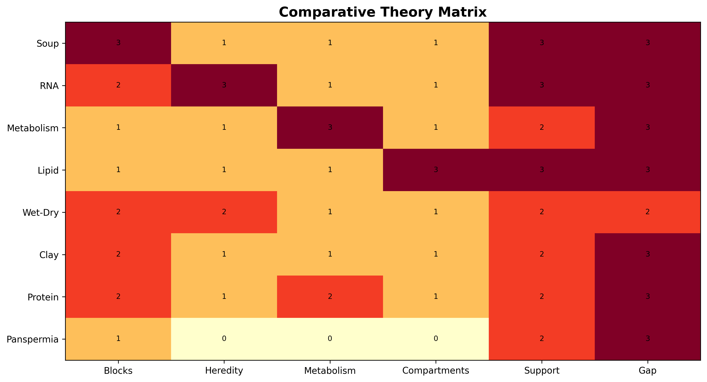
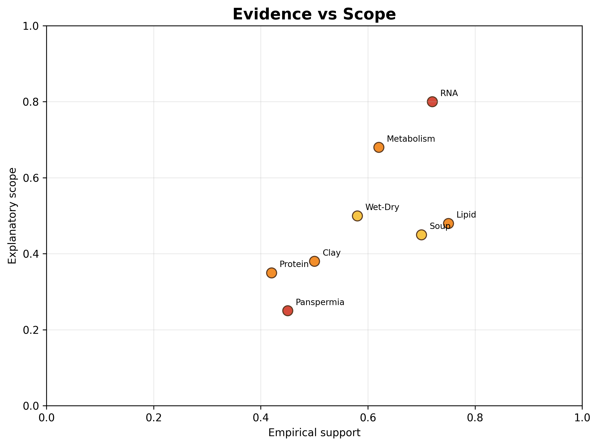

Chapter 10 Comparative Synthesis
Figure 10.1 compares explanatory strengths and weaknesses across the major theories.

Figure 10.1: Comparative matrix of major theories across key origin-of-life problem areas.
Figure 10.2 compares empirical support and explanatory scope.

Figure 10.2: Conceptual comparison of relative empirical support and explanatory scope among major origin-of-life theories.
10.1 Limitations of Comparative Framing
These figures are conceptual rather than strictly quantitative. Their rankings are heuristic and intended to support structured comparison rather than definitive scoring. Empirical support varies substantially by subdomain, and the figures necessarily simplify active scientific debates.